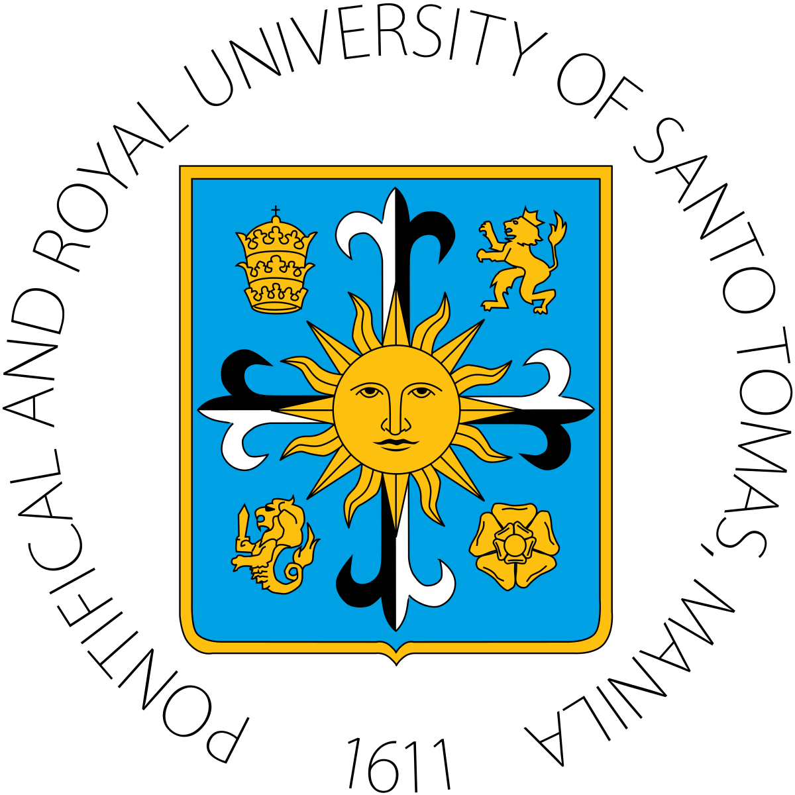
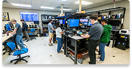
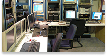

THE PONTIFICAL AND ROYAL
THE CATHOLIC UNIVERSITY OF THE PHILIPPINES
This section offers the degree programs of the College of Information and Computing Sciences, providing students with strong foundations in computing, technology, and information systems. Through Computer Science, Information Systems, and Information Technology, the college equips learners with the knowledge and skills to innovate, manage, and apply technology across academic, professional, and industry settings.
Duration: 4 years
The BSCS program is a four-year course focused on computing principles, algorithmic foundations, and emerging technologies. It equips students to design and implement complex software systems, as well as to develop innovative algorithms for solving computational challenges. Students also gain knowledge in software engineering standards and practices, learning the discipline of designing, coding, testing, and maintaining software components, modules, and applications that form complete solutions.
Duration: 4 years
The BSIT program is a four-year course that emphasizes practical and technical expertise in computer systems and networks. Students are trained to install, configure, and manage hardware and software environments. The curriculum highlights hands-on skills such as troubleshooting, repairing hardware components, and ensuring the smooth operation of IT infrastructures.
Duration: 4 years
The BSIS program is a four-year course that emphasizes practical and technical expertise in computer systems and networks. Students are trained to install, configure, and manage hardware and software environments. The curriculum highlights hands-on skills such as troubleshooting, repairing hardware components, and ensuring the smooth operation of IT infrastructures.
| Program | Abbreviation | Duration | Expanded Focus |
|---|---|---|---|
| Bachelor of Science in Computer Science | BSCS | 4 years | Concentrates on the theoretical foundations of computing, algorithm design, and advanced software development. Students learn to create efficient solutions, explore artificial intelligence, data science, and emerging technologies, while mastering software engineering practices for building reliable systems. |
| Bachelor of Science in Information Technology | BSIT | 4 years | Bridges technology and business processes, preparing students to analyze organizational needs and design system solutions. Focus areas include systems analysis, database management, IT project management, and aligning technology strategies with business objectives. Graduates often serve as liaisons between technical teams and management. |
| Bachelor of Science in Information Systems | BSIS | 4 years | Emphasizes practical application of IT in managing computer systems, networks, and hardware. Students gain hands-on skills in installation, configuration, troubleshooting, and maintenance of IT infrastructures. The program develops expertise in ensuring operational reliability and supporting organizational technology needs. |
| Note: All CICS undergraduate programs are full-time 4-year degree offerings accredited by CHED. | |||

The Computer Science department focuses on the theoretical foundations of computing, algorithms, and software development. It trains students to design efficient solutions, build complex systems, and explore innovations in artificial intelligence, data science, and emerging technologies.

The Information Technology department emphasizes practical skills in managing computer systems, networks, and hardware. Students gain expertise in installation, configuration, troubleshooting, and maintenance, ensuring reliable IT infrastructure for organizations.
The Information Systems department bridges technology and business processes. It prepares students to analyze organizational needs, design system solutions, and manage IT resources effectively, with emphasis on aligning technology strategies with business goals.
Center of Development recognition for Computer Science, Information Systems, and Information Technology
Level II Re-Accreditation for the three undergraduate programs